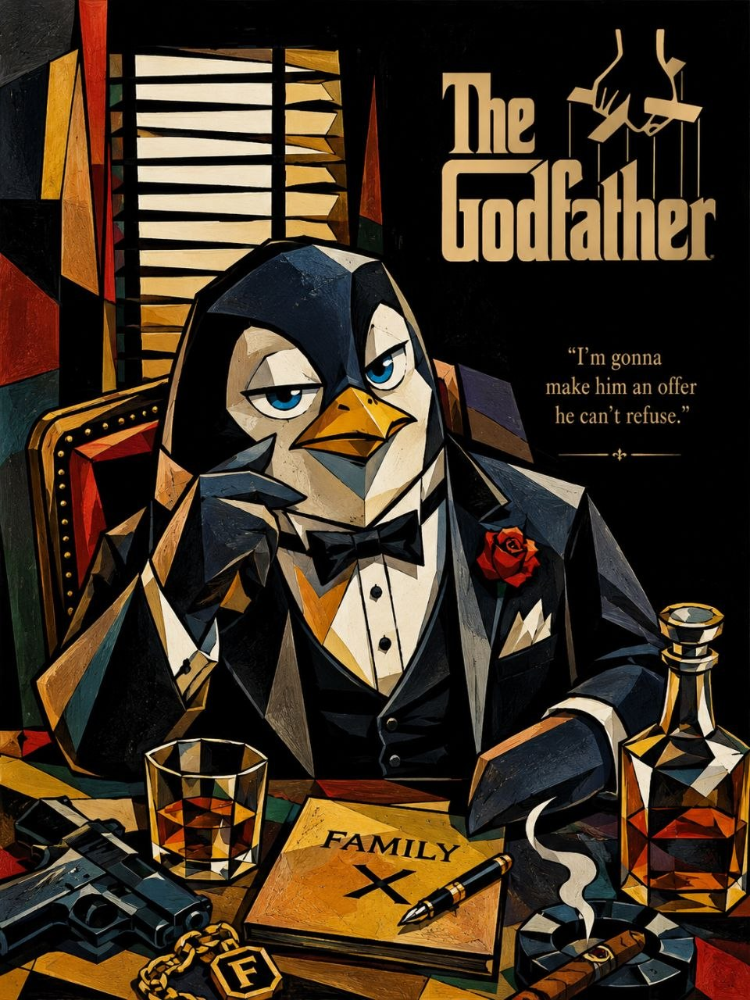
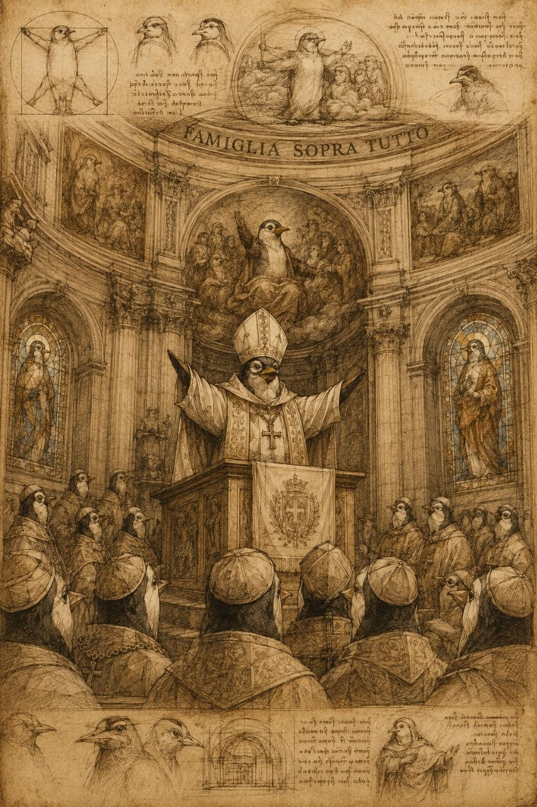
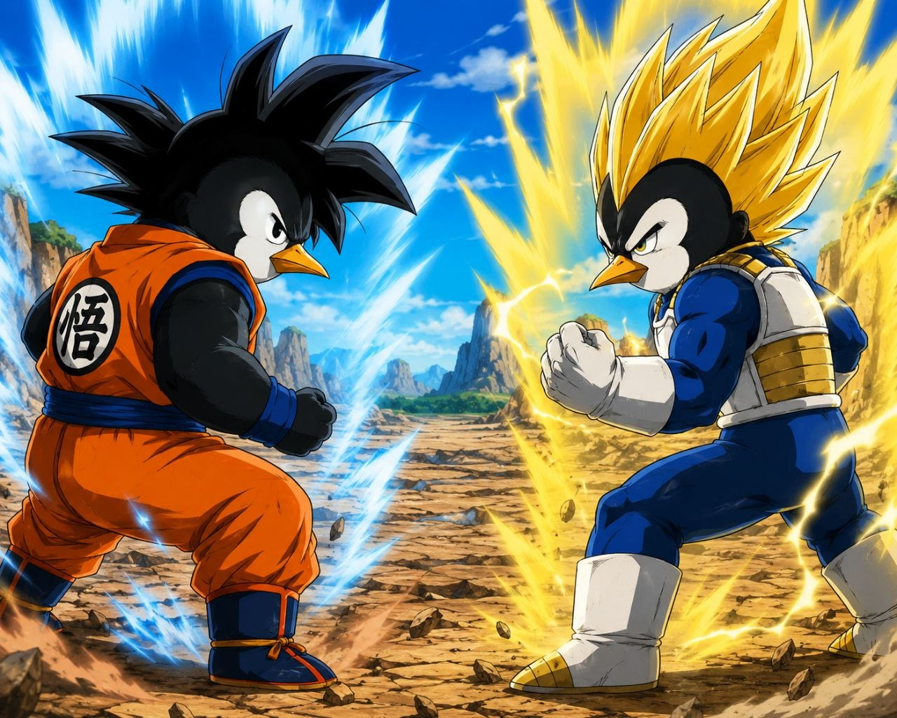
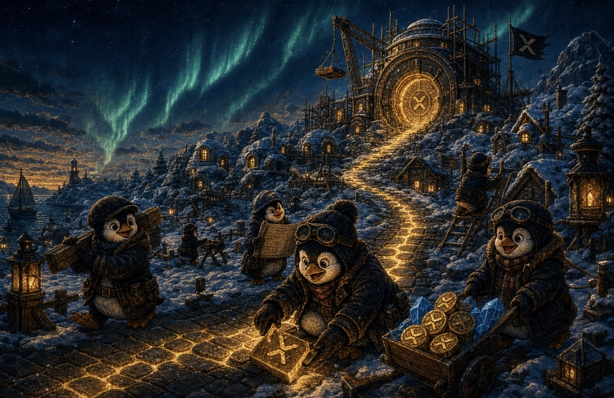
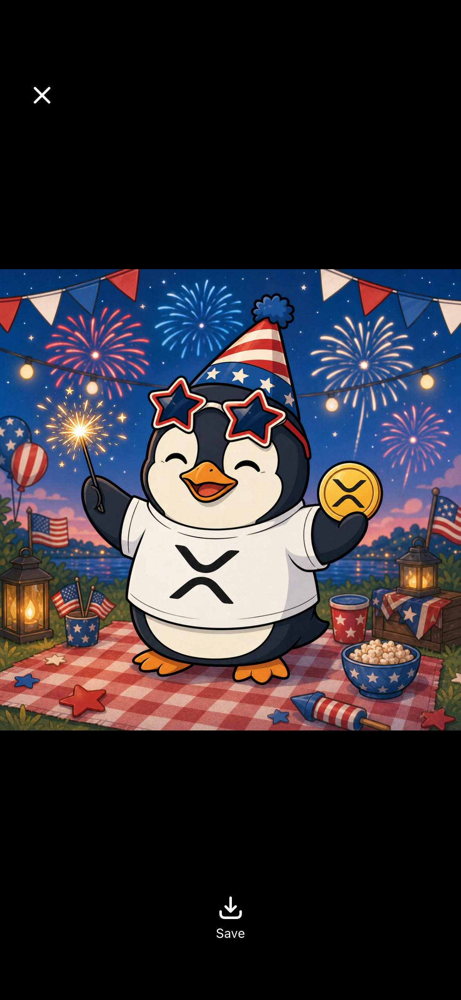

Community Tool
MEME LAB —
WADDLES GOES ANYWHERE.
Waddles is the $FAMILY penguin. Drop him into movie scenes, music videos, cartoons, history, fantasy — a different art style for every world, so nothing looks copy-pasted. Pick a scene, add your own line, generate a prompt (or a full image), repeat forever.
Waddles — Character Bible (stays constant across every image)
This description is glued into every prompt so Waddles stays recognizable no matter the art style. Edit it if you want a different accessory, expression, or detail baked into everything you generate.
Paste this into ChatGPT / GPT image, Midjourney, Grok Imagine, or any AI image tool you already use — or hit Generate Image below to render it right here, no key needed. Because the character bible + art style travel with every prompt, you can generate thousands of on-brand $FAMILY images without ever repeating the same look twice.
INSPIRATION GALLERY
Examples already made in this exact style — one per world, so you can see how differently each category should render.

Movie Scenes — 1970s oil-painting mob poster

Historical & Fine Art — Renaissance fresco / codex sketch

Cartoons & Anime — cel-shaded shonen battle

Fantasy & Game Worlds — painterly storybook illustration

Holiday & Everyday — flat vector sticker style